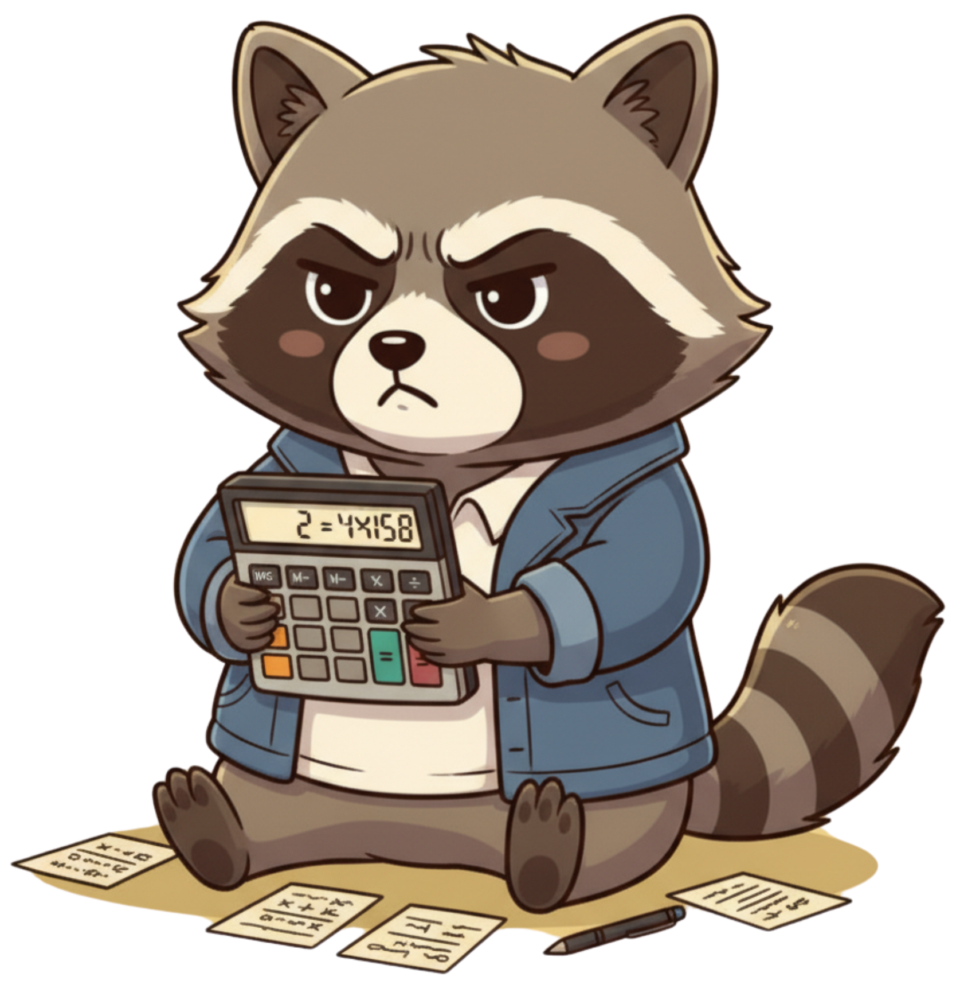

快速記帳 (支出)
輕鬆記錄日常開銷。
範例：「昨天中午吃了雞排 120」接入 Google Gemini，不只是指令接收器，而是會像朋友一樣理解你的自然語言，精準解析記帳方式。
例：「今天午餐雞排 120」 → 自動歸類為餐飲支出 非記帳訊息由具「浣熊性格」的 AI 回覆，偶爾調皮、偶爾貼心，陪你聊聊生活與金錢哲學。
告別複雜 App，無需下載，只需在 LINE 對話，就能記帳、查帳、互動。輕量、快速、直覺！
輕鬆記錄日常開銷。
範例：「昨天中午吃了雞排 120」清楚記錄每一筆收入。
範例：「收入薪水 30000」隨時掌握總收入、總支出、餘額。
範例：「查帳」輕鬆移除最近一筆錯誤記錄。
範例：「刪除」顯示所有可用指令與說明。
範例：「幫助」Gemini AI 解析自然語言，快速分類，讓記帳更聰明。
LINE 原生操作，隨手記帳不費力，隨時隨地輕鬆管理財務。
可愛浣熊互動，讓記帳不再枯燥，而是充滿樂趣的對話。
記帳小浣熊，讓理財變得更自然、更有趣。不只是幫你算錢，更幫你理解「錢」這件事。
掃描下方 QR Code 或搜尋 LINE ID 即可加入「記帳小浣熊」。
LINE ID: @575rjlmq
搜尋 LINE ID 或掃描 QR Code 輕鬆加入。

不只記帳，還能和小浣熊聊聊日常、問理財問題或放空一下。